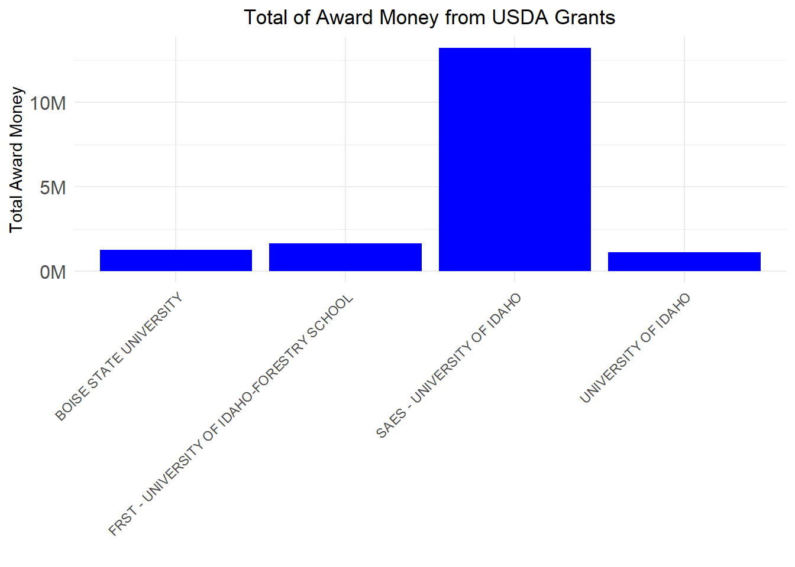
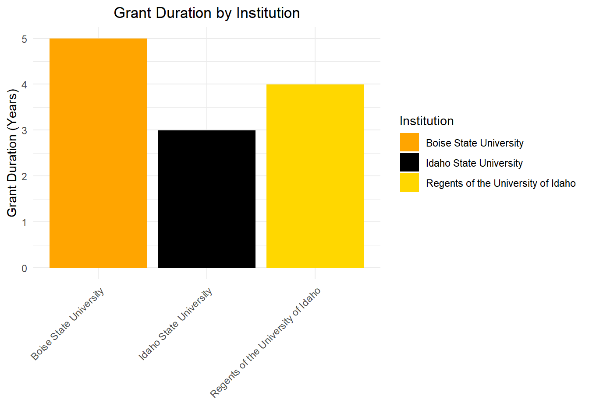

Code
suppressPackageStartupMessages(library(readxl))
suppressPackageStartupMessages(library(dplyr))
suppressPackageStartupMessages(library(tidyverse))Write a summary of the data sources you have used. Include a Data Dictionary table that fully describes each individual data source used. You may supplement the data supplied to you with additional sources if you like, but this is not required.
suppressPackageStartupMessages(library(readxl))
suppressPackageStartupMessages(library(dplyr))
suppressPackageStartupMessages(library(tidyverse))library(tidyverse)
library(readxl)
library(knitr)
USDAUI <- read.csv("USDAtoUI.csv")
knitr::kable(head(USDAUI))| Award.Date | Grant.Number | Proposal.Number | Grant.Title | State.Name | Grantee.Name | Award.Dollars | Program.Name | Program.Area.Name |
|---|---|---|---|---|---|---|---|---|
| 2010-09-30 | 2010-48679-01200 | N/A | N/A | IDAHO | SAES - UNIVERSITY OF IDAHO | 7495 | N/A | N/A |
| 2009-09-30 | 2009-48679-01200 | N/A | N/A | IDAHO | SAES - UNIVERSITY OF IDAHO | 6813 | N/A | N/A |
| 2008-09-30 | 2008-48679-01200 | N/A | N/A | IDAHO | SAES - UNIVERSITY OF IDAHO | 8524 | N/A | N/A |
| 2003-09-30 | 2003-48604-01200 | N/A | N/A | IDAHO | SAES - UNIVERSITY OF IDAHO | 1097 | N/A | N/A |
| 2010-09-30 | 2010-48024-01200 | N/A | N/A | IDAHO | SAES - UNIVERSITY OF IDAHO | 11997 | N/A | N/A |
| 2009-09-30 | 2009-48024-01200 | N/A | N/A | IDAHO | SAES - UNIVERSITY OF IDAHO | 14990 | N/A | N/A |
library(dplyr)
# Assuming 'Date' is the column containing the grant date information
start_date <- as.Date("2021-01-01")
end_date <- as.Date("2024-03-15")
UIgrants_recent_grantsUSDA <- USDAUI %>%
filter(Award.Date >= start_date & Award.Date <= end_date) %>%
arrange(desc(Award.Date))library(dplyr)
start_date <- as.Date("2024-01-01")
end_date <- as.Date("2024-12-31")
UIgrants_2024_grantsUSDA <- UIgrants_recent_grantsUSDA %>%
filter(Award.Date >= start_date & Award.Date <= end_date) %>%
summarise(UIgrants_2024_grantsUSDA = n())suppressPackageStartupMessages(library(readxl))
suppressPackageStartupMessages(library(dplyr))
suppressPackageStartupMessages(library(tidyverse))library(readxl)
DOEawardsUI <- read_xlsx("DOEawards.xlsx", .name_repair = "minimal")library(readxl)
library(dplyr)
DOEawardsUI <- read_xlsx("DOEawards.xlsx")New names:
• `` -> `...27`DOEUI_General <- DOEawardsUI %>%
dplyr::filter(Institution == 'Regents of the University of Idaho')
DOEUI_New_Awards <- DOEUI_General %>%
select(Title, Institution, PI, Status, `Action Type`, `Program Office`, `Start Date`, `End Date`, `Most Recent Award Date`, `Amount Awarded to Date`)
knitr::kable(head(DOEUI_New_Awards))| Title | Institution | PI | Status | Action Type | Program Office | Start Date | End Date | Most Recent Award Date | Amount Awarded to Date |
|---|---|---|---|---|---|---|---|---|---|
| Nuclear Theory at the University of Idaho | Regents of the University of Idaho | Sammarruca, Francesca | Active | Renewal | Office of Nuclear Physics | 12/01/2021 | 11/30/2024 | 12/29/2023 | 1812000 |
| Converting methoxy groups on lignin-derived aromatics from a toxic hurdle to a useful resource: a systems-driven approach | Regents of the University of Idaho | Marx, Christopher | Active | New | Office of Biological & Environmental Research | 09/01/2021 | 08/31/2024 | 08/02/2023 | 1404162 |
| Integrative Imaging of Plant Roots during Symbiosis with Mycorrhizal Fungi | Regents of the University of Idaho | Vasdekis, Andreas | Active | New | Office of Biological & Environmental Research | 08/15/2021 | 08/14/2024 | 06/26/2023 | 1519359 |
| Nutrient and Fine Sediment Transport Driven by Perturbations in River Bed Movement | Regents of the University of Idaho | Yager, Elowyn | Active | New | Office of Biological & Environmental Research | 09/01/2020 | 08/31/2024 | 04/12/2023 | 603903 |
library(tidyverse)
library(readr)
DOEawardsUI <- suppressMessages(read_xlsx("DOEawards.xlsx"))library(readxl)
library(dplyr)
library(tidyverse)
NIHUIAwardsActive <- read_xlsx("NIHUI_2.xlsx")
NIHUI_New_Awards_Specific <- NIHUIAwardsActive %>%
select('Project Title', 'Administering IC', 'Award Notice Date', `Opportunity Number`, `Project Number`, `Project Start Date`, `Project End Date`, `Budget Start Date`, `Budget End Date`, 'Total Cost', 'Total Cost (Sub Projects)', 'Funding IC(s)', 'Direct Cost IC', 'InDirect Cost IC', 'Total Cost IC')
knitr::kable(head(NIHUI_New_Awards_Specific))| Project Title | Administering IC | Award Notice Date | Opportunity Number | Project Number | Project Start Date | Project End Date | Budget Start Date | Budget End Date | Total Cost | Total Cost (Sub Projects) | Funding IC(s) | Direct Cost IC | InDirect Cost IC | Total Cost IC |
|---|---|---|---|---|---|---|---|---|---|---|---|---|---|---|
| Idaho INBRE Administrative Core | NIGMS | 9/18/2023 | PA-20-272 | 3P20GM103408-23S4 | 9/30/2001 | 4/30/2024 | 5/1/2023 | 4/30/2024 | NA | 848625 | NA | 610878 | 237747 | NA |
| Center for Modeling Complex Interactions | NIGMS | 9/12/2023 | PA-20-272 | 3P20GM104420-09S1 | 3/15/2015 | 6/30/2025 | 7/1/2023 | 6/30/2024 | 266181 | NA | NIGMS | 375566 | 181166 | 266181 |
| Idaho INBRE Program | NIGMS | 9/18/2023 | PA-20-272 | 3P20GM103408-23S4 | 9/30/2001 | 4/30/2024 | 5/1/2023 | 4/30/2024 | 848625 | NA | NIGMS | 610878 | 237747 | 848625 |
| Identifying phage-bacteria interactions using a multispecies model | NIGMS | 8/17/2023 | PAR-19-312 | 5P20GM104420-09 | 3/15/2015 | 6/30/2025 | 7/1/2023 | 6/30/2024 | NA | 152932 | NA | 106362 | 46570 | NA |
| Sequence-structure-function relationships in human visual photopigments | NIGMS | 8/17/2023 | PAR-19-312 | 5P20GM104420-09 | 3/15/2015 | 6/30/2025 | 7/1/2023 | 6/30/2024 | NA | 156572 | NA | 109348 | 47224 | NA |
| Idaho INBRE Administrative Core | NIGMS | 5/8/2023 | PA-20-272 | 3P20GM103408-23S1 | 9/30/2001 | 4/30/2024 | 5/1/2023 | 4/30/2024 | NA | 190515 | NA | 165515 | 25000 | NA |
library(readxl)
library(dplyr)
library(tidyverse)
library(knitr) # Ensure knitr is explicitly loaded for kable()
# Reading the dataset from an Excel file
NSFUIAwardsActive <- read_xlsx("NSFUI_2.xlsx")
# Selecting specific columns, ensure there are no leading or trailing spaces in column names
NSFUI_New_Awards_Specific <- NSFUIAwardsActive %>%
select(Title, NSFOrganization, StartDate, LastAmendmentDate, EndDate, AwardedAmountToDate)
# Displaying the first few rows in a table format
knitr::kable(head(NSFUI_New_Awards_Specific))| Title | NSFOrganization | StartDate | LastAmendmentDate | EndDate | AwardedAmountToDate |
|---|---|---|---|---|---|
| RII Track-1: Idaho Community-engaged Resilience for Energy-Water Systems (I-CREWS) | OIA | 08/01/2023 | 09/11/2023 | 07/31/2028 | $2,099,031.00 |
| RII Track-1: Linking Genome to Phenome to Predict Adaptive Responses of Organisms to Changing Landscapes | OIA | 10/01/2018 | 09/07/2022 | 03/31/2024 | $20,000,000.00 |
| RII Track-2 FEC: Developing a Circular Bio-Based Framework For Architecture, Engineering and Construction Through Additive Manufacturing | OIA | 10/01/2021 | 08/23/2023 | 09/30/2025 | $2,999,475.00 |
| Phase III IUCRC at University of Idaho: Center for Advanced Forestry Systems | EEC | 12/15/2019 | 03/11/2024 | 11/30/2024 | $693,814.00 |
| Conference: NSF EPSCoR Workshop: Intelligent Manufacturing for Extreme Environments | OIA | 09/01/2023 | 08/17/2023 | 08/31/2024 | $99,445.00 |
| Collaborative Research: As above so below: Quantifying the role of simultaneous LLSVPs and continents on Earth’s cooling history using numerical simulations of mantle convection | EAR | 07/01/2023 | 06/08/2023 | 06/30/2026 | $120,952.00 |
Provide a visualization that shows our active awards from each sponsor. I need to see their start date and end date, the amount of the award, and the name of the Principal Investigator. I’m really interested in seeing how far into the future our current portfolio will exist. Are there a bunch of awards about to expire? Are there a bunch that just got funded and will be active for a while? Does this vary across sponsors?
What is the proportional representation of new awards to the UI from these various sources over the past 5 to 10 years? Are there any trends that are encouraging or discouraging?
How is UI performing with these sponsors when compared to the following peer institutions?
Department of Agriculture (NIFA)
library(tidyverse)
library(readxl)
library(knitr)
BSUUSDA <- read.csv("USDABSU.csv")
knitr::kable(head(BSUUSDA))| Award.Date | Grant.Number | Proposal.Number | Grant.Title | State.Name | Grantee.Name | Award.Dollars | Program.Name | Program.Area.Name |
|---|---|---|---|---|---|---|---|---|
| 2003-11-14 | 2004-35302-14138 | 2003-01470 | Host Selection Decisions and Mass Colonization in the Douglas-Fir Beetle, Dendroctonus Pseudotsugae (Coleoptera: Scolytidae) | IDAHO | BOISE STATE UNIVERSITY | 70000 | Organismal & Population Biology of Arthropods & Nematodes | National Research Initiative Competitive Grants Program |
| 2003-08-13 | 2003-35101-13682 | 2003-01569 | The Effects of Wildfire on Trophic Structure and Food Web Dynamics in Stream Ecosystems | IDAHO | BOISE STATE UNIVERSITY | 66867 | Managed Ecosystems | National Research Initiative Competitive Grants Program |
| 2004-07-22 | 2004-35102-14802 | 2004-00882 | Utilizing Ground-Penetrating Radar and Solute Tracer Experiments to Determine the Extent of the Hyporheic Zone in Mountain Streams | IDAHO | BOISE STATE UNIVERSITY | 83489 | Water and Watersheds | National Research Initiative Competitive Grants Program |
| 2006-07-24 | 2006-35101-17430 | 2006-01372 | Understanding Linkages Between Agricultural and Natural Systems: Trophic Structure, Pesticide Exposure, and Costs and Benefits of Group Liv | IDAHO | BOISE STATE UNIVERSITY | 100000 | Managed Ecosystems | National Research Initiative Competitive Grants Program |
| 2008-08-13 | 2008-35320-04555 | 2008-03063 | Analysis of native and introduced populations of an invasive plant: management of medusahead (Taeniatherum caput-medusae) in western US | IDAHO | BOISE STATE UNIVERSITY | 99929 | Biology of Weedy & Invasive Species in Agroecosystems | National Research Initiative Competitive Grants Program |
| 2009-09-28 | 2009-65119-05977 | 2009-01778 | Enterotoxin-based mucosal vaccines to prevent bovine mastitis caused by Staphylococcus aureus | IDAHO | BOISE STATE UNIVERSITY | 144015 | Animal Health and Well-Being: Animal Well-Being | Agriculture and Food Research Initiative |
Department of Energy
library(readxl)
library(dplyr)
DOEawardsBSU <- read_xlsx("DOEawards.xlsx")New names:
• `` -> `...27`DOEBSU_General <- DOEawardsBSU %>%
dplyr::filter(Institution == 'Boise State University')
DOEBSU_New_Awards <- DOEBSU_General %>%
select(Title, Institution, PI, Status, `Action Type`, `Program Office`, `Start Date`, `End Date`, `Most Recent Award Date`, `Amount Awarded to Date`)
knitr::kable(head(DOEBSU_New_Awards))| Title | Institution | PI | Status | Action Type | Program Office | Start Date | End Date | Most Recent Award Date | Amount Awarded to Date |
|---|---|---|---|---|---|---|---|---|---|
| Emerging Properties through Controlled Phase Transformations for High Energy Sodium Ion Batteries | Boise State University | Xiong, Hui (Claire) | Active | New | Office of Basic Energy Sciences | 08/15/2023 | 08/14/2026 | 09/23/2023 | 599992 |
| Uptake mechanisms of REE in sedimentary phosphorite mineral Sponsor: Department of Energy | Boise State University | Kohn, Matthew | Active | New | Office of Basic Energy Sciences | 09/01/2023 | 08/31/2026 | 09/14/2023 | 888250 |
| DNA-Controlled Dye Aggregation ¿ A Path to Create Quantum Entanglement | Boise State University | Knowlton, William | Active | Renewal | Office of Basic Energy Sciences | 08/15/2023 | 08/14/2025 | 08/31/2023 | 12500000 |
| Neuromorphic Systems for Power Grid Cyber-Resilience | Boise State University | Cantley, Kurtis | Active | New | Office of Basic Energy Sciences | 09/01/2022 | 08/31/2025 | 08/07/2023 | 708985 |
| Understanding Interfacial Chemistry and Cation Order-Disorder in Mixed-Phased Complex Sodium Metal Oxide Cathodes for Sodium Ion Batteries | Boise State University | Xiong, Hui (Claire) | Active | Renewal | Office of Basic Energy Sciences | 09/15/2022 | 09/14/2025 | 07/25/2023 | 1349813 |
| Realizing the constraining power of galaxy clusters on cosmic acceleration: from DES to LSST | Boise State University | Wu, Hao-Yi | Active | New | Office of High Energy Physics | 08/01/2021 | 07/31/2026 | 06/30/2023 | 750000 |
library(tidyverse)National Institutes of Health (NIH)
library(readxl)
library(dplyr)
library(tidyverse)
NIHBSUAwardsActive <- read_xlsx("NIHBSU_2.xlsx")
NIHBSU_New_Awards_Specific <- NIHBSUAwardsActive %>%
select('Project Title', 'Administering IC', 'Award Notice Date', `Opportunity Number`, `Project Number`, `Project Start Date`, `Project End Date`, `Budget Start Date`, `Budget End Date`, 'Total Cost', 'Total Cost (Sub Projects)', 'Funding IC(s)', 'Direct Cost IC', 'InDirect Cost IC', 'Total Cost IC')
knitr::kable(head(NIHBSU_New_Awards_Specific))| Project Title | Administering IC | Award Notice Date | Opportunity Number | Project Number | Project Start Date | Project End Date | Budget Start Date | Budget End Date | Total Cost | Total Cost (Sub Projects) | Funding IC(s) | Direct Cost IC | InDirect Cost IC | Total Cost IC |
|---|---|---|---|---|---|---|---|---|---|---|---|---|---|---|
| Administrative Core | NIGMS | 8/24/2023 | PA-20-272 | 3P20GM109095-10S1 | 8/1/2014 | 5/31/2024 | 6/1/2023 | 5/31/2024 | NA | 723429 | NA | 517798 | 205631 | NA |
| Center of Biomedical Research Excellence in Matrix Biology Phase II | NIGMS | 8/24/2023 | PA-20-272 | 3P20GM109095-10S1 | 8/1/2014 | 5/31/2024 | 6/1/2023 | 5/31/2024 | 723429 | NA | NIGMS | 517798 | 205631 | 723429 |
| Role of LINC-mediated Mechanosignaling in MSC Aging | NIA | 1/29/2024 | PA-16-442 | 5R01AG059923-05 | 3/1/2020 | 1/31/2025 | 2/1/2024 | 1/31/2025 | 252208 | NA | NIA | 184500 | 67708 | 252208 |
| Equipment for Spatiotemporal Dynamics of the Genome by 3D Orbital Tracking | NIGMS | 5/23/2023 | PA-20-272 | 3R15GM123446-02A1S1 | 5/17/2017 | 7/31/2025 | 8/1/2022 | 7/31/2025 | 97574 | NA | NIGMS | 97574 | 0 | 97574 |
| Chemical probes to modulate acyl-homoserine lactone quorum signal synthesis | NIGMS | 6/26/2023 | PA-20-272 | 3R15GM148920-01S1 | 9/20/2022 | 8/31/2025 | 9/20/2022 | 8/31/2025 | 94718 | NA | NIGMS | 94718 | 0 | 94718 |
| Chemical tools to investigate chain-flipping in quorum signal synthases | NIAID | 2/14/2024 | PA-20-195 | 5R21AI175749-02 | 1/23/2023 | 12/31/2025 | 1/1/2024 | 12/31/2024 | 12663 | NA | NIAID | 9013 | 3650 | 12663 |
National Science Foundation (NSF)
library(readxl)
library(dplyr)
library(tidyverse)
library(knitr) # Ensure knitr is explicitly loaded for kable()
# Reading the dataset from an Excel file
NSFBSUAwardsActive <- read_xlsx("NSFBSU_2.xlsx")
# Selecting specific columns, ensure there are no leading or trailing spaces in column names
NSFBSU_New_Awards_Specific <- NSFBSUAwardsActive %>%
select(Title, NSFOrganization, StartDate, LastAmendmentDate, EndDate, AwardedAmountToDate)
# Displaying the first few rows in a table format
knitr::kable(head(NSFBSU_New_Awards_Specific))| Title | NSFOrganization | StartDate | LastAmendmentDate | EndDate | AwardedAmountToDate |
|---|---|---|---|---|---|
| Planning: Track 1: Curriculum and Advancements in Recruitment, Education, and Engineering Retention (CAREER) | EEC | 07/15/2022 | 07/14/2022 | 06/30/2024 | $99,808.00 |
| IUCRC Phase II Boise State University: Center for Atomically Thin Multifunctional Coatings (ATOMIC) | EEC | 08/01/2021 | 11/14/2023 | 07/31/2026 | $582,631.00 |
| MRI: Acquisition of a 600 MHz NMR Console and Cryoprobe to Support Research and Education at Boise State University | DBI | 10/01/2022 | 08/10/2023 | 09/30/2025 | $769,221.00 |
| MRI: Track 1: Acquisition of a Liquid Chromatography-High Resolution Mass Spectrometry System for Multidisciplinary Research and Training | CHE | 09/01/2023 | 08/22/2023 | 08/31/2026 | $710,000.00 |
| ART: Translational Research Ambassadors Network for Strengthening Institutional Capacity and Fostering a Responsive and Open Mindset (TRANSFORM) | ITE | 02/01/2024 | 09/08/2023 | 01/31/2028 | $5,499,567.00 |
| Lattice dynamics and phase transitions in multifunctional oxide nanomaterials studied by ultraviolet Raman spectroscop | DMR | 07/01/2021 | 03/22/2023 | 12/31/2024 | $486,000.00 |
Department of Energy
library(readxl)
library(dplyr)
DOEaward <- read_xlsx("DOEawards.xlsx")New names:
• `` -> `...27`DOEIDAHOSATTE_General <- DOEaward %>%
dplyr::filter(Institution == 'Idaho State University')
DOEDAHOSATTE_New_Awards <- DOEIDAHOSATTE_General %>%
select(Title, Institution, PI, Status, `Action Type`, `Program Office`, `Start Date`, `End Date`, `Most Recent Award Date`, `Amount Awarded to Date`)
knitr::kable(head(DOEDAHOSATTE_New_Awards))| Title | Institution | PI | Status | Action Type | Program Office | Start Date | End Date | Most Recent Award Date | Amount Awarded to Date |
|---|---|---|---|---|---|---|---|---|---|
| Precision Electroweak Probe of BSM Physics | Idaho State University | McNulty, Dustin | Active | Renewal | Office of Nuclear Physics | 09/01/2023 | 08/31/2026 | 08/31/2023 | 1195000 |
| Mechanistic and Kinetic Analysis of Polymer Deconstruction and Modification by Irradiation for Polymer Upcycling | Idaho State University | Jenkins, Courtney | Active | New | Office of Basic Energy Sciences | 09/01/2022 | 08/31/2025 | 07/24/2023 | 583930 |
library(tidyverse)Department of Agriculture (NIFA)
library(tidyverse)
library(readxl)
library(knitr)
ISUUSDA <- read.csv("USDAISU.csv")
knitr::kable(head(ISUUSDA))| Award.Date | Grant.Number | Proposal.Number | Grant.Title | State.Name | Grantee.Name | Award.Dollars | Program.Name | Program.Area.Name |
|---|---|---|---|---|---|---|---|---|
| 2002-07-19 | 2002-35320-12359 | 2002-00673 | Instrumentation for Evaluating the Role of Photosynthetic Ecophysiology in Plant Invasions of Semiarid Communities | IDAHO | IDAHO STATE UNIVERSITY | 24464 | Biology of Weedy & Invasive Species in Agroecosystems | National Research Initiative Competitive Grants Program |
| 2003-07-28 | 2003-35206-13612 | 2003-03242 | Metabolic Consequences of Lipid Suppression on Carbohydrate Tolerance and Growth Performance in Rainbow Trout (Oncorhynchus Mykiss) | IDAHO | IDAHO STATE UNIVERSITY | 74759 | Animal Growth and Nutrient Utilization | National Research Initiative Competitive Grants Program |
| 2006-08-23 | 2006-35320-17463 | 2006-03625 | Land Effects:Peristence Exotic Forbs in Sagebrush Steppe:Are Loss of Foundation Species/Disruption Soil Resource Partitioning Causal Links? | IDAHO | IDAHO STATE UNIVERSITY | 323764 | Biology of Weedy & Invasive Species in Agroecosystems | National Research Initiative Competitive Grants Program |
| 2010-01-12 | 2010-85320-20506 | 2009-04939 | Exotic Bromus grasses in agroecosystems of the western US: REEnet synthesis of current and future invasions, impacts, and management. | IDAHO | IDAHO STATE UNIVERSITY | 81029 | Biology of Weedy and Invasive Species in Agroecosystems | Agriculture and Food Research Initiative |
| 2014-03-24 | 2014-69004-21848 | 2013-05727 | Strengthening Seed Grant: Addressing threats to potato crop using precision agriculture | IDAHO | IDAHO STATE UNIVERSITY | 150000 | Global Food Security: Mitigating Crop and Livestock Losses | Agriculture and Food Research Initiative |
| 2018-03-15 | 2018-69002-27963 | 2017-07303 | Measuring feedbacks between farmer adaptation to irrigation water restrictions, landuse change, and water availability in southeast Idaho | IDAHO | IDAHO STATE UNIVERSITY | 149993 | Climate and Land Use | Agriculture and Food Research Initiative |
National Institutes of Health (NIH)
library(readxl)
library(dplyr)
library(tidyverse)
NIHISUAwardsActive <- read_xlsx("NIHISU_2.xlsx")
NIHISU_New_Awards_Specific <- NIHISUAwardsActive %>%
select('Project Title', 'Administering IC', 'Award Notice Date', `Opportunity Number`, `Project Number`, `Project Start Date`, `Project End Date`, `Budget Start Date`, `Budget End Date`, 'Total Cost', 'Total Cost (Sub Projects)', 'Funding IC(s)', 'Direct Cost IC', 'InDirect Cost IC', 'Total Cost IC')
knitr::kable(head(NIHISU_New_Awards_Specific))| Project Title | Administering IC | Award Notice Date | Opportunity Number | Project Number | Project Start Date | Project End Date | Budget Start Date | Budget End Date | Total Cost | Total Cost (Sub Projects) | Funding IC(s) | Direct Cost IC | InDirect Cost IC | Total Cost IC |
|---|---|---|---|---|---|---|---|---|---|---|---|---|---|---|
| The Brain-Behavior Relationship: Age, Hearing, and Their Effects on Understanding Speech in Noise | NIDCD | 1/12/2023 | PA-13-302 | 7R01DC015240-06 | 8/15/2016 | 7/31/2024 | 6/1/2022 | 7/31/2024 | 251216 | NA | NIDCD | 200394 | 50822 | 251216 |
| MOLECULAR ANALYSIS OF MALARIA MITOCHONDRIAL GENE REGULATION | NIAID | 12/18/2023 | PAR-20-259 | 5DP2AI164244-03 | 1/1/2022 | 12/31/2026 | 1/1/2024 | 12/31/2024 | 364371 | NA | NIAID | 262096 | 102275 | 364371 |
| Timely Response to In-Hospital Deterioration Through Design of Actionable Augmented Intelligence | NIGMS | 6/20/2023 | PA-19-056 | 5R01GM137083-04 | 7/15/2020 | 6/30/2024 | 7/1/2023 | 6/30/2024 | 397867 | NA | NIGMS | 356308 | 41559 | 397867 |
| The role of metal ion homeostasis in regulating bacterial capsule production | NIAID | 8/10/2022 | PAR-18-714 | 1R15AI149725-01A1 | 8/10/2022 | 7/31/2025 | 8/10/2022 | 7/31/2025 | 408497 | NA | NIGMS | 235007 | 84993 | 320000 |
| The role of metal ion homeostasis in regulating bacterial capsule production | NIAID | 8/10/2022 | PAR-18-714 | 1R15AI149725-01A1 | 8/10/2022 | 7/31/2025 | 8/10/2022 | 7/31/2025 | 408497 | NA | NIAID | 64992 | 23505 | 88497 |
| Mechanisms of respiratory-related rhythmic motor activity and plasticity in the developing avian brain stem | NINDS | 4/14/2020 | PAR-18-714 | 2R15NS087521-02A1 | 9/30/2014 | 3/31/2024 | 4/15/2020 | 3/31/2024 | 358752 | NA | NINDS | 263720 | 95032 | 358752 |
National Science Foundation (NSF)
library(readxl)
library(dplyr)
library(tidyverse)
library(knitr) # Ensure knitr is explicitly loaded for kable()
# Reading the dataset from an Excel file
NSFISUAwardsActive <- read_xlsx("NSFISU_2.xlsx")
# Selecting specific columns, ensure there are no leading or trailing spaces in column names
NSFISU_New_Awards_Specific <- NSFISUAwardsActive %>%
select(Title, NSFOrganization, StartDate, LastAmendmentDate, EndDate, AwardedAmountToDate)
# Displaying the first few rows in a table format
knitr::kable(head(NSFISU_New_Awards_Specific))| Title | NSFOrganization | StartDate | LastAmendmentDate | EndDate | AwardedAmountToDate |
|---|---|---|---|---|---|
| CDS&E: Immersive Virtual Reality for Discovering Hidden Chemical Information and Improving Multivariate Modeling and Predication | CHE | 09/15/2023 | 09/13/2023 | 08/31/2026 | $449,994.00 |
| GP-IN: Pathways to tribal geosciences careers through cultural connections to iconic landscapes | RISE | 01/01/2022 | 08/16/2021 | 12/31/2024 | $284,964.00 |
| Supporting Transfer Student Success Using a Multidisciplinary Approach | DUE | 10/01/2022 | 07/25/2022 | 09/30/2028 | $1,499,956.00 |
| Reynolds Creek Carbon Critical Zone Observatory | EAR | 12/01/2013 | 07/24/2023 | 05/31/2024 | $3,755,249.00 |
| MRI: Acquisition of a FACSMelody Flow Cytometer and Cell Sorter | DBI | 10/01/2022 | 09/07/2022 | 09/30/2025 | $262,971.00 |
| MRI: Acquisition of a Laser Ablation - Inductively Coupled Plasma - Triple Quadrupole - Mass Spectrometer (LA-ICP-QQQ-MS) System For Research and Education | BCS | 08/15/2023 | 08/17/2023 | 07/31/2026 | $744,396.00 |
Note that “performing” can mean a variety of different things. You must choose your metrics of performance and justify them.
USDA
# COMPARISON BETWEEEN USDA - AWARD MONEY
library(readxl)
USDA_Compare_Data <- read_xlsx("USDA_Combined_Data_Recent_Awards.xlsx")
library(dplyr)
library(ggplot2)
library(dplyr)
# Calculate total award money for each institution
USDA_total_award_money <- USDA_Compare_Data %>%
group_by(Grantee_Name) %>%
summarise(USDA_total_award_money = sum(Award_Dollars))
library(ggplot2)
ggplot(USDA_total_award_money, aes(x = Grantee_Name, y = USDA_total_award_money)) +
geom_bar(stat = "identity", fill = "blue") +
ggtitle("Total of Award Money from USDA Grants") +
xlab("") +
ylab("Total Award Money") +
theme_minimal() +
theme(axis.text.x = element_text(angle = 45, hjust = 1),
axis.text.y = element_text(size = 12),
plot.title = element_text(hjust = 0.5)) + # Corrected position of plot title
scale_y_continuous(labels = scales::number_format(scale = 1e-6, suffix = "M"))
DOE
# COMPARISON BETWEEEN DOE - Grant Duration
library(readxl)
DOE_Compare_Data <- read_xlsx("DOEawards_Combined_Data.xlsx")
library(dplyr)
# Assuming 'start_date' and 'end_date' are columns containing the start and end dates of the grants,
# and 'institution' is a column indicating the institution for each grant
# Filter the data for each institution
UI_data <- DOE_Compare_Data %>%
filter(Institution == "Regents of the University of Idaho")
BSU_data <- DOE_Compare_Data %>%
filter(Institution == "Boise State University")
ISU_data <- DOE_Compare_Data %>%
filter(Institution == "Idaho State University")
# Calculate the duration of grants for each institution
# Convert "Start Date" and "End Date" columns to date objects
UI_data <- UI_data %>%
mutate(`Start Date` = as.Date(`Start Date`, format = "%m/%d/%Y"),
`End Date` = as.Date(`End Date`, format = "%m/%d/%Y"))
# Assuming 'grant_duration' is in days
UI_data <- UI_data %>%
mutate(grant_duration = `End Date` - `Start Date`)
UI_data <- UI_data %>%
mutate(grant_duration_years = as.numeric(grant_duration) / 365.25)
# BSU
BSU_data <- BSU_data %>%
mutate(`Start Date` = as.Date(`Start Date`, format = "%m/%d/%Y"),
`End Date` = as.Date(`End Date`, format = "%m/%d/%Y"))
# Assuming 'grant_duration' is in days
BSU_data <- BSU_data %>%
mutate(grant_duration = `End Date` - `Start Date`)
BSU_data <- BSU_data %>%
mutate(grant_duration_years = as.numeric(grant_duration) / 365.25)
# ISU
ISU_data <- ISU_data %>%
mutate(`Start Date` = as.Date(`Start Date`, format = "%m/%d/%Y"),
`End Date` = as.Date(`End Date`, format = "%m/%d/%Y"))
# Assuming 'grant_duration' is in days
ISU_data <- ISU_data %>%
mutate(grant_duration = `End Date` - `Start Date`)
ISU_data <- ISU_data %>%
mutate(grant_duration_years = as.numeric(grant_duration) / 365.25)
# Visualization
library(dplyr)
# Assuming UI_data contains the grant duration information for one institution
# and other_datasets contain the grant duration information for the other institutions
# Combine datasets
combined_data <- bind_rows(UI_data, BSU_data, ISU_data)
# Colors
my_colors <- c("Boise State University" = "orange", "Idaho State University" = "black", "Regents of the University of Idaho" = "gold")
# Plotting grant duration as a bar graph
# Plotting grant duration as a bar graph
library(ggplot2)
ggplot(combined_data, aes(x = Institution, y = grant_duration_years, fill = Institution)) +
geom_bar(stat = "identity", position = "dodge") +
ggtitle("Grant Duration by Institution") +
xlab("") +
ylab("Grant Duration (Years)") +
scale_fill_manual(values = my_colors) + # Apply custom colors
theme_minimal() +
theme(axis.text.x = element_text(angle = 45, hjust = 1, size = 12), # Adjust size of x-axis labels
axis.text.y = element_text(size = 12), # Adjust size of y-axis labels
legend.text = element_text(size = 12), # Adjust size of legend text
plot.title = element_text(hjust = 0.5, size = 14)) # Adjust size of plot title
# COMPARISON BETWEEEN DOE - AWARD MONEY
library(dplyr)
library(ggplot2)
# Calculate total award money for each institution
DOE_total_award_money <- DOE_Compare_Data %>%
group_by(Institution) %>%
summarise(DOE_total_award_money = sum(`Amount Awarded to Date`))
# Colors
my_colors <- c("Boise State University" = "orange", "Idaho State University" = "black", "Regents of the University of Idaho" = "gold")
library(ggplot2)
ggplot(DOE_total_award_money, aes(x = Institution, y = DOE_total_award_money)) +
geom_bar(stat = "identity", position = "dodge", fill = my_colors) +
ggtitle("Total of Award Money from USDA Grants") +
xlab("") +
ylab("Total Award Money") +
theme_minimal() +
theme(axis.text.x = element_text(angle = 45, hjust = 1, size = 12), # Adjust size of x-axis labels
axis.text.y = element_text(size = 12), # Adjust size of y-axis labels
legend.text = element_text(size = 12), # Adjust size of legend text
plot.title = element_text(hjust = 0.5, size = 14)) + # Adjust size of plot title
scale_y_continuous(labels = scales::number_format(scale = 1e-6, suffix = "M"))
# COMPARISON BETWEEEN DOE - Grant Status
library(dplyr)
library(ggplot2)
# Calculate total grant action count for each institution
DOE_Grant_Action <- DOE_Compare_Data %>%
group_by(Institution, `Action Type`) %>%
summarise(count = n(), .groups = "drop") %>%
ungroup()
library(ggplot2)
# Assuming DOE_Grant_Action is your summarized data frame with counts of Action Type by Institution
ggplot(DOE_Grant_Action, aes(x = Institution, y = count, fill = `Action Type`)) +
geom_bar(stat = "identity", position = "dodge") +
ggtitle("Number of Counts of Action Type by Institution") +
xlab("") +
ylab("Number of Active Grants") +
theme_minimal() +
theme(axis.text.x = element_text(angle = 45, hjust = 1, size = 12), # Adjust size of x-axis labels
axis.text.y = element_text(size = 12), # Adjust size of y-axis labels
legend.text = element_text(size = 12), # Adjust size of legend text
plot.title = element_text(hjust = 0.5, size = 14))
NSF
# COMPARISON BETWEEEN NSF - Grant Duration
library(readxl)
NSF_Compare_Data <- read_xlsx("NSF_Combined_Data.xlsx")
library(dplyr)
# Filter the data for each institution
UI_NSF_data <- NSF_Compare_Data %>%
filter(Organization == "Regents of the University of Idaho")
BSU_NSF_data <- NSF_Compare_Data %>%
filter(Organization == "Boise State University")
ISU_NSF_data <- NSF_Compare_Data %>%
filter(Organization == "Idaho State University")
# Calculate the duration of grants for each institution
# Convert "Start Date" and "End Date" columns to date objects
#UI
UI_NSF_data <- UI_NSF_data %>%
mutate(`Start Date` = as.Date(StartDate, format = "%m/%d/%Y"),
`End Date` = as.Date(EndDate, format = "%m/%d/%Y"))
# Assuming 'grant_duration' is in days
UI_NSF_data <- UI_NSF_data %>%
mutate(grant_duration = `End Date` - `Start Date`)
UI_NSF_data <- UI_NSF_data %>%
mutate(grant_duration_years = as.numeric(grant_duration) / 365.25)
# BSU
BSU_NSF_data <- BSU_NSF_data %>%
mutate(`Start Date` = as.Date(StartDate, format = "%m/%d/%Y"),
`End Date` = as.Date(EndDate, format = "%m/%d/%Y"))
# Assuming 'grant_duration' is in days
BSU_NSF_data <- BSU_NSF_data %>%
mutate(grant_duration = `End Date` - `Start Date`)
BSU_NSF_data <- BSU_NSF_data %>%
mutate(grant_duration_years = as.numeric(grant_duration) / 365.25)
# ISU
ISU_NSF_data<- ISU_NSF_data %>%
mutate(`Start Date` = as.Date(StartDate, format = "%m/%d/%Y"),
`End Date` = as.Date(EndDate, format = "%m/%d/%Y"))
# Assuming 'grant_duration' is in days
ISU_NSF_data <- ISU_NSF_data %>%
mutate(grant_duration = `End Date` - `Start Date`)
ISU_NSF_data <- ISU_NSF_data %>%
mutate(grant_duration_years = as.numeric(grant_duration) / 365.25)
# Visualization
library(dplyr)
# Assuming UI_data contains the grant duration information for one institution
# and other_datasets contain the grant duration information for the other institutions
# Combine datasets
combined_data_NSF <- bind_rows(UI_NSF_data, BSU_NSF_data, ISU_NSF_data)
# Colors
my_colors <- c("Boise State University" = "orange", "Idaho State University" = "black", "Regents of the University of Idaho" = "gold")
# Plotting grant duration as a bar graph
library(ggplot2)
ggplot(combined_data_NSF, aes(x = Organization, y = grant_duration_years, fill = Organization)) +
geom_bar(stat = "identity", position = "dodge") +
ggtitle("Grant Duration by Organization") +
xlab("") +
ylab("Grant Duration (Years)") +
scale_fill_manual(values = my_colors) + # Apply custom colors
theme_minimal() +
theme(axis.text.x = element_text(angle = 45, hjust = 1, size = 12), # Adjust size of x-axis labels
axis.text.y = element_text(size = 12), # Adjust size of y-axis labels
legend.text = element_text(size = 12), # Adjust size of legend text
plot.title = element_text(hjust = 0.5, size = 14)) # Adjust size of plot title
# COMPARISON BETWEEEN NSF - AWARD MONEY - NO APARECE LA DATA
library(dplyr)
library(ggplot2)
# Convert AwardedAmountToDate column to numeric
NSF_Compare_Data$AwardedAmountToDate <- as.numeric(gsub("\\$", "", NSF_Compare_Data$AwardedAmountToDate))Warning: NAs introduced by coercion# Calculate total award money for each institution
NSF_total_award_money <- NSF_Compare_Data %>%
group_by(Organization) %>%
summarise(NSF_total_award_money = sum(AwardedAmountToDate, na.rm = TRUE))
# Calculate total award money for each institution
NSF_total_award_money <- NSF_Compare_Data %>%
group_by(Organization) %>%
summarise(NSF_total_award_money = sum(AwardedAmountToDate))
# Colors
my_colors <- c("Boise State University" = "orange", "Idaho State University" = "black", "Regents of the University of Idaho" = "gold")
library(ggplot2)
ggplot(NSF_total_award_money, aes(x = Organization, y = NSF_total_award_money)) +
geom_bar(stat = "identity", position = "dodge", fill = my_colors) +
ggtitle("Total of Award Money from NSF Grants") +
xlab("") +
ylab("Total Award Money") +
theme_minimal() +
theme(axis.text.x = element_text(angle = 45, hjust = 1, size = 12), # Adjust size of x-axis labels
axis.text.y = element_text(size = 12), # Adjust size of y-axis labels
legend.text = element_text(size = 12), # Adjust size of legend text
plot.title = element_text(hjust = 0.5, size = 14)) + # Adjust size of plot title
scale_y_continuous(labels = scales::number_format(scale = 1e-6, suffix = "M"))Warning: Removed 3 rows containing missing values (`geom_bar()`).
# COMPARISON BETWEEEN NSF - Grant Status
library(dplyr)
library(ggplot2)
# Calculate total grant action count for each institution
NSF_Grant_Award_Instrument <- NSF_Compare_Data %>%
group_by(Organization, AwardInstrument) %>%
summarise(count = n(), .groups = "drop") %>%
ungroup()
# Check unique levels of AwardInstrument
unique_levels <- unique(NSF_Grant_Award_Instrument$AwardInstrument)
# Adjust my_colors_4 to match the number of unique levels
my_colors_4 <- c("navyblue", "darkgreen", "darkorange", "darkred") # or any other color palette you prefer
# Plot with adjusted colors
ggplot(NSF_Grant_Award_Instrument, aes(x = Organization, y = count, fill = AwardInstrument)) +
geom_bar(stat = "identity", position = "dodge") +
ggtitle("Number of Counts of Action Type by Institution") +
xlab("") +
ylab("Number of Active Grants") +
scale_fill_manual(values = my_colors_4) + # Add this line to set custom colors
theme_minimal() +
theme(axis.text.x = element_text(angle = 45, hjust = 1, size = 12),
axis.text.y = element_text(size = 12),
legend.text = element_text(size = 12),
plot.title = element_text(hjust = 0.5, size = 14))
NIH
# COMPARISON BETWEEEN NIH - Grant Duration
library(readxl)
NIH_Compare_Data <- read_xlsx("NIH_Combined_Data.xlsx")
library(dplyr)
# Filter the data for each institution
UI_NIH_data <- NIH_Compare_Data %>%
filter(OrganizationName == "UNIVERSITY OF IDAHO")
BSU_NIH_data <- NIH_Compare_Data %>%
filter(OrganizationName == "BOISE STATE UNIVERSITY")
ISU_NIH_data <- NIH_Compare_Data %>%
filter(OrganizationName == "IDAHO STATE UNIVERSITY")
# Calculate the duration of grants for each institution
# Convert "Start Date" and "End Date" columns to date objects
#UI
UI_NIH_data <- UI_NIH_data%>%
mutate(`Start Date` = as.Date(ProjectStartDate, format = "%m/%d/%Y"),
`End Date` = as.Date(ProjectEndDate, format = "%m/%d/%Y"))
# Assuming 'grant_duration' is in days
UI_NIH_data <- UI_NIH_data %>%
mutate(grant_duration = `End Date` - `Start Date`)
UI_NIH_data <- UI_NIH_data %>%
mutate(grant_duration_years = as.numeric(grant_duration) / 365.25)
# BSU - no quiere funcionar no tengo la menor idea pq
BSU_NIH_data <- BSU_NIH_data %>%
mutate(`Start Date` = as.Date(ProjectStartDate, format = "%m/%d/%Y"),
`End Date` = as.Date(ProjectEndDate, format = "%m/%d/%Y"))
# Assuming 'grant_duration' is in days
BSU_NIH_data <- BSU_NIH_data %>%
mutate(grant_duration = `End Date` - `Start Date`)
BSU_NIH_data <- BSU_NIH_data %>%
mutate(grant_duration_years = as.numeric(grant_duration) / 365.25)
# ISU
ISU_NIH_data<- ISU_NIH_data %>%
mutate(`Start Date` = as.Date(ProjectStartDate, format = "%m/%d/%Y"),
`End Date` = as.Date(ProjectEndDate, format = "%m/%d/%Y"))
# Assuming 'grant_duration' is in days
ISU_NIH_data <- ISU_NIH_data %>%
mutate(grant_duration = `End Date` - `Start Date`)
ISU_NIH_data <- ISU_NIH_data %>%
mutate(grant_duration_years = as.numeric(grant_duration) / 365.25)
# Visualization
library(dplyr)
# Assuming UI_data contains the grant duration information for one institution
# and other_datasets contain the grant duration information for the other institutions
# Combine datasets
combined_data_NIH <- bind_rows(UI_NIH_data, BSU_NIH_data, ISU_NIH_data)
# Colors
my_colors_3 <- c("BOISE STATE UNIVERSITY" = "orange", "IDAHO STATE UNIVERSITY" = "black", "UNIVERSITY OF IDAHO" = "gold")
# Plotting grant duration as a bar graph
library(ggplot2)
ggplot(combined_data_NIH, aes(x = OrganizationName, y = grant_duration_years, fill = OrganizationName)) +
geom_bar(stat = "identity", position = "dodge") +
ggtitle("Grant Duration by Organization") +
xlab("") +
ylab("Grant Duration (Years)") +
scale_fill_manual(values = my_colors_3) + # Apply custom colors
theme_minimal() +
theme(axis.text.x = element_text(angle = 45, hjust = 1, size = 12), # Adjust size of x-axis labels
axis.text.y = element_text(size = 12), # Adjust size of y-axis labels
legend.text = element_text(size = 12), # Adjust size of legend text
plot.title = element_text(hjust = 0.5, size = 14)) # Adjust size of plot title
# COMPARISON BETWEEEN NIH - AWARD MONEY - CALCULATED THE AVERAGE INSTEAD THE TOTAL AMMOUNT
library(dplyr)
library(ggplot2)
# Calculate total award money for each institution, removing NA values in TotalCost
NIH_total_award_money <- NIH_Compare_Data %>%
group_by(OrganizationName) %>%
summarise(NIH_total_award_money = sum(TotalCost, na.rm = TRUE))
# Colors
my_colors_3 <- c("BOISE STATE UNIVERSITY" = "orange", "IDAHO STATE UNIVERSITY" = "black", "UNIVERSITY OF IDAHO" = "gold")
library(ggplot2)
ggplot(NIH_total_award_money, aes(x = OrganizationName, y = NIH_total_award_money)) +
geom_bar(stat = "identity", position = "dodge", fill = my_colors_3) +
ggtitle("Total of Award Money from NIH Grants") +
xlab("") +
ylab("Total Award Money") +
theme_minimal() +
theme(axis.text.x = element_text(angle = 45, hjust = 1, size = 12), # Adjust size of x-axis labels
axis.text.y = element_text(size = 12), # Adjust size of y-axis labels
legend.text = element_text(size = 12), # Adjust size of legend text
plot.title = element_text(hjust = 0.5, size = 14)) + # Adjust size of plot title
scale_y_continuous(labels = scales::number_format(scale = 1e-6, suffix = "M"))